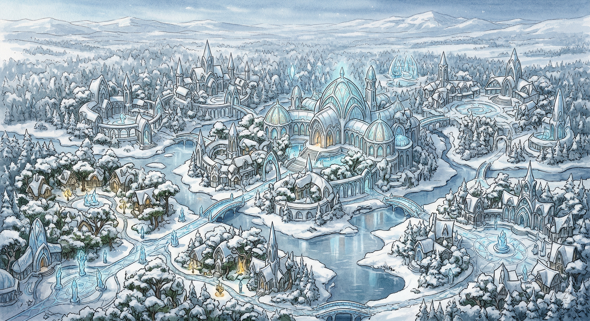

Settlement
FrostGlade

Snow-covered trees and shimmering ice sculptures greet you as you approach. The city’s gates, adorned with intricate elven designs, open to reveal a landscape where nature and architecture blend seamlessly. Pathways lined with luminescent crystals guide you through the twilight hours.
Overview
Capital of the Silverleaf Lands. An arcane sanctuary where elves study the arcane arts, commune with nature spirits, and honor ancestors in sacred groves. An ethereal blend of natural beauty and elven architecture.
Key Features
- Arcane Sanctuary — academies and libraries for arcane study; enchantments woven into daily life
- Sacred Groves — ancient trees for worship and meditation throughout the city
- Crystal Springs — believed to have healing properties, integral to rituals
- Hall of Elders — where the Council of Silverleaf meets to guide the city
Notable Figures
- Elder Arannis Moonwhisper — revered elder, deep knowledge of ancient lore and magic
- Druidess Lirael Windwalker — guides the city’s spiritual practices
- Council Member Thalindra Starbloom — oversees city defenses
Shops & Services
- Thalion Ironroot — blacksmith, elven weapons and armor infused with magic
- Arcane Wonders (Aeloria Moonshadow) — rare magical items and artifacts
- Frostglade Provisions (Eldrin Leaflight) — general goods and supplies
Adventurers Guild
Guildmaster Elarion Sunblade runs the Frostglade chapter from a majestic white-stone guildhall. Quest postings, supplies, and lodging available for members.